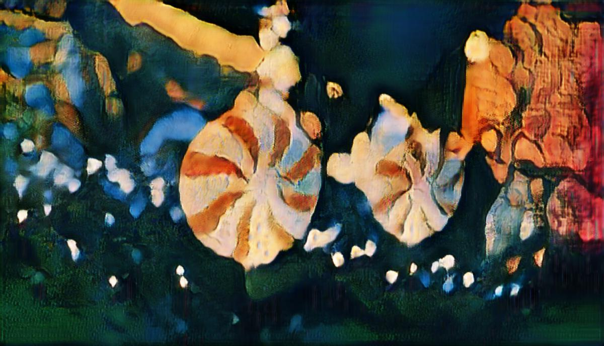
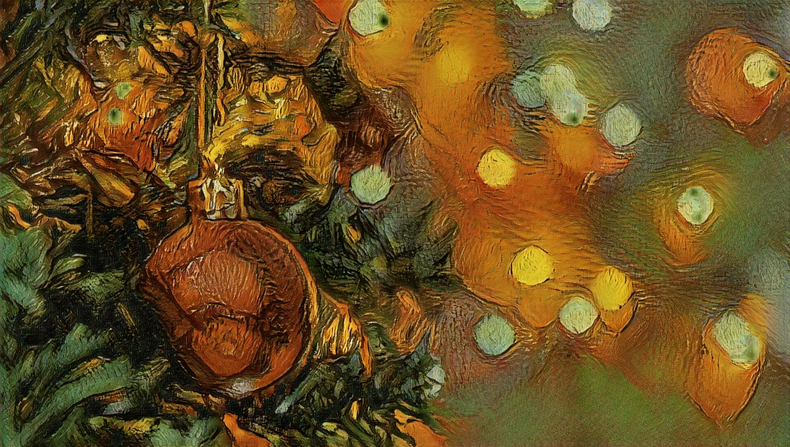

I have a lot of fond memories celebrating Christmas with my family when I was younger, it is one of a few occasions that I can truly feel the spirit and the atmosphere. This is a series of images that were altered using Adaptive Style Transfer model on Runway ML, in the style of famous historical painters.

